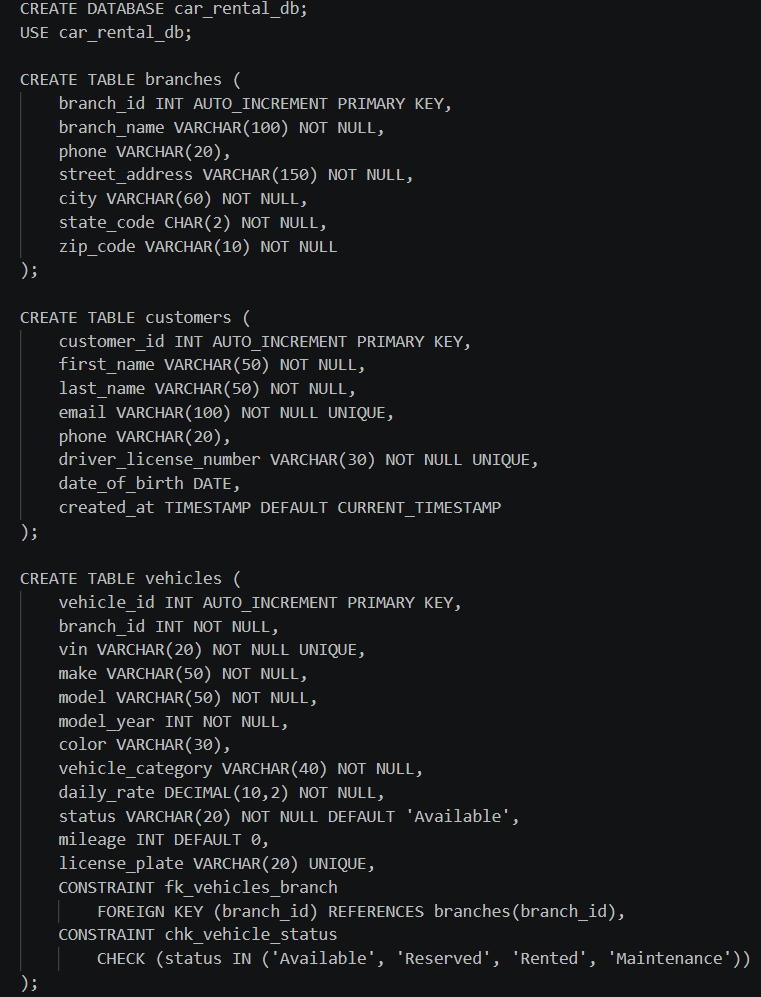
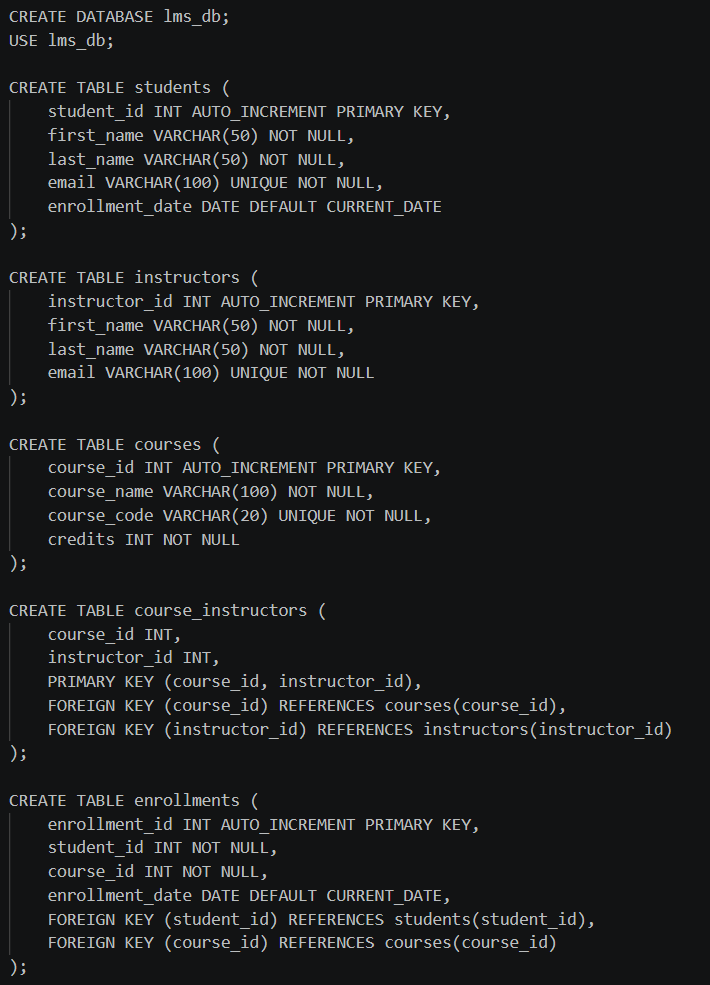

Car Rental System
A relational database designed to manage branches, customers, vehicles, reservations, rentals, and payments in one organized system.
Portfolio Section
This page features two SQL database design examples that demonstrate my ability to build structured relational systems, define key relationships, organize business data, and design databases that support real-world operations.
A relational database designed to manage branches, customers, vehicles, reservations, rentals, and payments in one organized system.
A relational academic system designed to manage students, instructors, courses, assignments, enrollments, and grades.
Together, these projects demonstrate both business-focused and academic database design using structured SQL and realistic relational models.
Featured Work
Since these examples are database design projects written in SQL, they are presented with screenshots and source code links rather than live browser applications.
Database Example 1
This example demonstrates my database skills through the design of an online car rental database system. The database is structured to manage customers, branches, vehicles, reservations, payments, and rentals in an organized relational model. It illustrates my ability to design normalized tables, define primary and foreign key relationships, apply business rules with constraints, and create a database structure that supports real-world operations. This example highlights my understanding of SQL database design, data integrity, and system organization.
This project showcases a business-focused relational database using multiple related tables, realistic attributes, and structured SQL design.

Database Example 2
This example demonstrates my database design skills through the creation of a Learning Management System database. The system is designed to manage students, instructors, courses, enrollments, assignments, and grades. It illustrates my ability to design relational databases with many-to-many relationships using junction tables, enforce data integrity through primary and foreign keys, and structure data to support real-world academic workflows. This example highlights my understanding of normalization, relational design, and SQL implementation for complex systems.
This project emphasizes academic data modeling, relational structure, and organized SQL design for a multi-entity system.

Portfolio Summary
These two projects were selected to demonstrate my ability to design professional database systems with clear table structure, valid relationships, and practical SQL implementation.